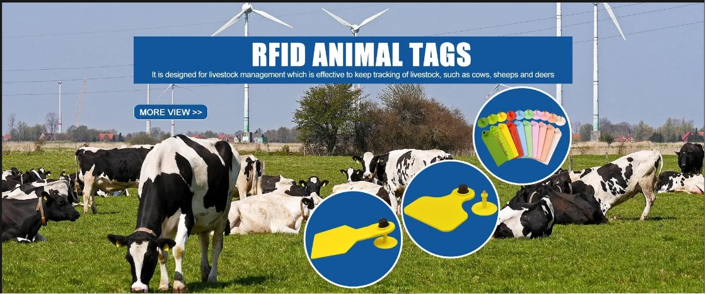

Changsha Camille Business Co., Ltd.
Located in Changsha, Hunan Province, we are a professional manufacturer specializing in high-quality animal identification products and veterinary equipment. With years of industry experience, we are committed to providing reliable, innovative solutions for livestock management and research applications worldwide.
Our Core Products:
RFID Ear Tags: Advanced UHF/HF/LF tags for cattle, cows, and livestock tracking
Reflective Ear Tags: High-visibility numbering for day/night identification
Ear Tag Applicators (Pliers): Professional-grade tools for easy tag installation
Veterinary Syringes & Needles: Sterile, precision medical supplies
Livestock Marker Pens: Durable, waterproof animal marking solutions
Custom Ear Tags: Tailored designs for specific farm or research needs
Main Product Categories:
RFID Ear Tags (Cattle, Sheep, Goats, Pigs)
Reflective Ear Tags (All Livestock)
Small Animal Tags (Mice, Rats, Rabbits)
Ear Tag Applicators and Removal Tools
Veterinary Injection Equipment
Livestock Marking Supplies
Why Choose Us?
Technical Expertise: 15+ years in animal identification technology
Quality Assurance: ISO-certified manufacturing with durable materials
Custom Solutions: Tailored designs for specific livestock needs
Competitive Pricing: Direct factory prices for bulk orders
Global Compliance: Meet international livestock tagging standards
Applications:
Our products are widely used in dairy/beef cattle management, sheep/goat/pig farming, poultry operations, wildlife research, and laboratory animal identification.
At Changsha Camille Business Co., Ltd., we are committed to delivering innovative and reliable animal identification solutions that enhance livestock management and research efficiency. Contact us today to discuss your requirements!
